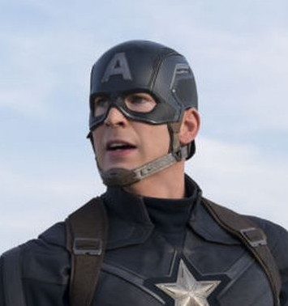
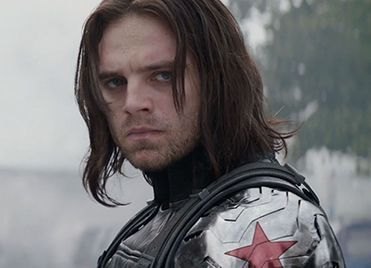

スティーブ・ロジャース / キャプテン・アメリカ
S.H.I.E.L.D.ストライクチーム指導者 // 自由の守護者
シールドの暗部や「事前抑止」を名目としたインサイト計画の監視社会化に深い不信感を抱く。フューリー暗殺の濡れ衣を着せられ組織から追われる身となるが、シールドを裏から乗っ取っていた悪の組織「ヒドラ」を壊滅させるため、昔ながらの星条旗スーツに身を包み再び立ち上がる。
「一人でも戦うが、一人ではないと信じてる。」
ナターシャ・ロマノフ / ブラック・ウィドウ
超一流のスパイ // スティーブの相棒
スティーブと共に潜入任務をこなすシールドの凄腕エージェント。フューリーの残した暗号を解読するため、孤立したスティーブと行動を共にする。自身の過去を清算するためにシールドのすべての機密データを世界中に暴露する覚悟を決め、公聴会では威然とした態度を崩さなかった。
「私たちの正体を暴けば世界が揺らぐわ。……微々たるものだけど、あなたを一人で戦わせはしない。」

サム・ウィルソン / ファルコン
元パラレスキュー隊員 // 空駆ける戦友
退役軍人のカウンセラーをしていた際、ランニング中のスティーブと意気投合する。シールドに追われ逃込んできたスティーブとナターシャを迷わず匿い、かつて開発に携わった軍用人工翼「ファルコン・ウイング」を奪取。広大な空中戦でキャプテンの翼として大活躍する。
「もう言うなよ！もう聞き飽きｔ」『左から失礼』「くそっ！」

バッキー・バーンズ / ウィンター・ソルジャー
ヒドラの暗殺兵器 // 過去から来た亡霊
第二次世界大戦中、列車から転落したスティーブの親友バッキー。ヒドラに密かに回収されてサイバネティックスの左腕を移植され、徹底的な洗脳と冷凍睡眠を繰り返されて、50年間歴史の影で暗殺を重ねてきた冷酷な暗殺者。スティーブの顔を見たことで、強固な洗脳に狂いが生じ始める。
「お前を殺す。それが俺の任務だ」